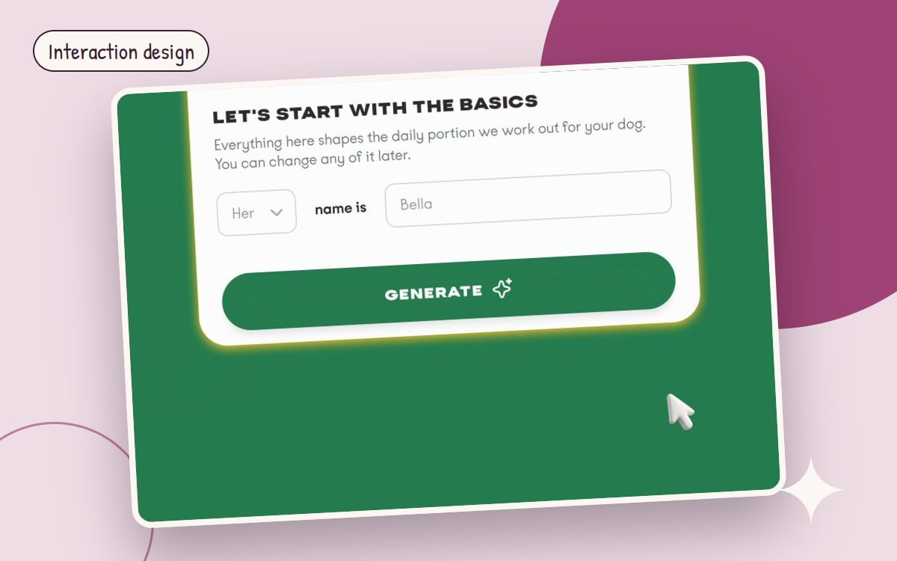
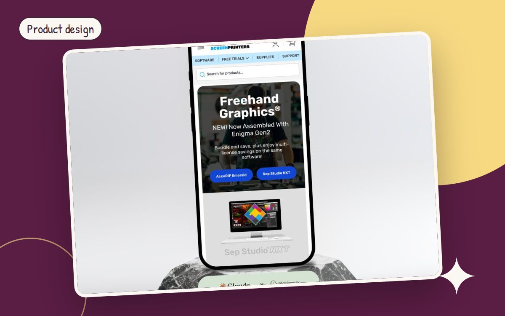

WRITING
Notes on product design
What I have learned designing e-commerce and healthcare products: visual hierarchy, research, accessibility, interaction design and process, with examples from real projects.
 Visual hierarchy · 3 min readF-pattern vs. Z-pattern, revisited: design for how people actually scanWhy the F-pattern is a warning sign, when the Z-pattern helps, and how scan paths shaped a healthcare ERP dashboard that cut comprehension time by 40%.Read article
Visual hierarchy · 3 min readF-pattern vs. Z-pattern, revisited: design for how people actually scanWhy the F-pattern is a warning sign, when the Z-pattern helps, and how scan paths shaped a healthcare ERP dashboard that cut comprehension time by 40%.Read article
 UX research · 3 min readUX surveys: write fewer questions, get better answersWhen a survey is the wrong tool, how to anchor questions in real behavior, and how doctor interviews became design principles.Read article
UX research · 3 min readUX surveys: write fewer questions, get better answersWhen a survey is the wrong tool, how to anchor questions in real behavior, and how doctor interviews became design principles.Read article Accessibility · 3 min readAccessible color is a system decision, not a final checkThe grayscale test still works, but senior teams build accessible color into tokens, components and QA. WCAG rules, real numbers and a review checklist.Read article
Accessibility · 3 min readAccessible color is a system decision, not a final checkThe grayscale test still works, but senior teams build accessible color into tokens, components and QA. WCAG rules, real numbers and a review checklist.Read article
Interaction design · 3 min readShow people there is more: continuation in multi-step flowsContinuation cues like peeking cards and step trackers cut drop-off when they are honest. How step summaries took a flow from 47% to 11%.Read article
Product design · 3 min readThe best interface is the step you removeInvisible design means removing work while keeping control visible. Lessons from AI meal plans, a healthcare ERP and QA automation.Read article Process · 3 min readWaterfall or agile? Pick per risk, not per religionMost teams mix both. Choose upfront structure or fast iteration based on the cost of being wrong, with healthcare ERP and e-commerce examples.Read article
Process · 3 min readWaterfall or agile? Pick per risk, not per religionMost teams mix both. Choose upfront structure or fast iteration based on the cost of being wrong, with healthcare ERP and e-commerce examples.Read article